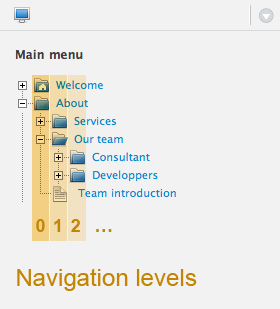

Display the navigation menu
The navigation menu HTMl output is done through a tag and a dedicated helper.
Ionize provides 2 types of menu :
- One level navigation menu,
- Tree navigation menu
These 2 menus are using unordered HTML list, UL and LI.
About helpers and the navigation helper
Helpers are PHP functions stored in the /application/helpers/ and in the /themes/your_theme/helpers/ folders.
They are part of the CodeIgniter framework, used by Ionize.
By default, Ionize comes with a navigation helper located in /application/helpers/navigation_helper.php
This helper can be replaced by your one.
Simply copy the above file in your theme helpers folder and modify it to fit your needs.
Take care to copy all the helpers functions into your own helper, even you modify just one of them.
Displaying navigation
To get one menu content (pages) in views, Ionize comes with 2 tags :
navigation : This tag provides a one level navigation.
tree_navigation : Displays the complete tree of pages.
Displaying one level navigation
This is done by using the <ion:navigation /> tag.
This tag uses the function get_navigation() from the navigation helper.
Displaying one level means displaying the pages which are at this level for the current parent.

Navigation code in views
This example will display the level 0 of the menu called menu_name.
<-- Code in view --> <ion:navigation level="0" tag="ul" id="my_nav" class="nav" active_class="active" menu="menu_name" /> <-- HTML Result --> <ul id="my_nav" class="nav"> <li class="active"><a href="home">Home</a></li> <li><a href="services">Our Services</a></li> <li><a href="about">About us</a></li> </ul>
Displaying the tree navigation
This is done by using the <ion:tree_navigation /> tag.
Navigation code in views
<-- Code in view --> <ion:tree_navigation level="0" tag="ul" id="my_nav" class="nav" active_class="active" /> <-- HTML Result --> <ul id="my_nav" class="nav"> <li><a href="home">Home</a></li> <li class="active"><a href="services">Our Services</a></li> <ul> <li class="active"><a class="active" href="webdesign">Webdesign</a></li> <li><a href="coding">Coding</a></li> </ul> <li><a href="about">About us</a></li> </ul>
Disable the Helper
This function will be implemented in the next version for the navigation menu.